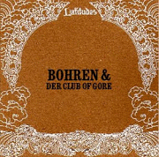
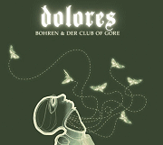
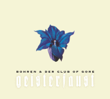
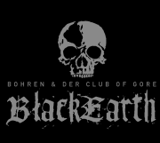
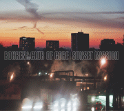
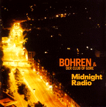
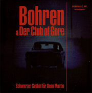
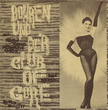
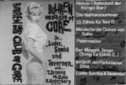

- Mitleid Lady
- 
- Limited edition CD
- Was supposed to be released on August 27th 2007 by Southern Records. Instead there was a delay and the CD was finally released in May 2009.
- 1. Mitleid Lady
- Order here (Southern Records)
- From the official site:
- "In the style of John Peel's legendary BBC-Sessions, Southern Records started with the Latitude-Series a similar project - a never-to be-repeated series of session recordings in a limited edition, recorded and mixed in one day in Southern's London Studios. The 10-minutes track Mitleid Lady is the contribution of Bohren & der Club of Gore to this Latitude-Serie. It is not (!) the new Bohren & der Club of Gore CD."
- From Latitude's site:
- "Six parts doom, four parts jazz-balladry – Bohren Und Der Club Of Gore return with this ten minute soundtrack to an unmade existential chiller."
- Dolores
- 
- CD and Double LP
- Was released worldwide on October 10th 2008 by Pias
- and in North America on October 21st 2008 by Ipecac.
- Running time: 58:23
- 1. Staub
- 2. Karin
- 3. Schwarze Biene (Black Maja)
- 4. Unkerich (listen)
- 5. Still am Tresen
- 6. Welk
- 7. Von Schnäbeln
- 8. Orgelblut
- 9. Faul
- 10. Welten
- Geisterfaust
- 
- CD
- Released in 2005 by Wonder.
- Running time: 58:52
- 1. Zeigefinger
- 2. Daumen
- 3. Ringfinger
- 4. Mittelfinger
- 5. Kleiner Finger
- Christoph Clöser:
- "Geisterfaust is slower, more uneventful and, how the label says, 'not for sale'. I'm not playing more keyboards, but less sax. When we started with GF the only agreement between us was less sax, or better no sax, because we thought it's time for some rougher stuff after the pleasant Sunset Mission and the eventful Black Earth. Each finger has a special meaning in Germany and the tracks and the order of their appearance follow these special meanings. The meaning of the fingers has nothing to do with esoteric things, but with its meaning and/or skills in practical life."
- Black Earth
- 
- CD and Double LP
- Released in 2002 by Wonder.
- Reissued in 2004 by Ipecac.
- Running time: 70:55
- 1. Midnight Black Earth
- 2. Crimson Ways
- 3. Maximum Black
- 4. Vigilante Crusade
- 5. Destroying Angels
- 6. Grave Wisdom
- 7. Constant Fear
- 8. Skeletal Remains
- 9. The Art of Coffins
- From Wikipedia:
- "Black Earth is the fourth album by the ambient jazz band Bohren & der Club of Gore. Black Earth is probably the band's most well-known album due to its widespread availability in the US, as it was re-released on the American label Ipecac Recordings in 2004."
- Morten Gass:
- "The new album is again about murder and crime. Black Earth is the quintessence of the three previous albums. It took us one year to record the album. Such a long time because we did everything by ourselves. Production, engineering and all the studio equipment was all in our hands. But on the technical side, it was the playing that took the most out of us. It was very hard to play precisely in such a slow and quiet way. Most of the time was spent getting the right sound out of the double bass. Black Earth is a doom record (in most kinds of ways). We just deal with themes like "murder", "horror", "funeral" and " the end of the world". We are very happy with the whole album (music, sound, titles, cover), because we had all the time in the world to come up with such a record. It is 100% the music that we had in mind."
- Sunset Mission
- 
- CD and double LP
- Released in 2000 by Wonder.
- Running time: 73:28
- 1. Prowler
- 2. On Demon Wings
- 3. Midnight Walker
- 4. Street Tattoo
- 5. Painless Steel
- 6. Darkstalker
- 7. Nightwolf
- 8. Black City Skyline
- 9. Dead End Angels
- From Wikipedia:
- "Sunset Mission is the third full length record from Bohren & der Club of Gore. The liner notes include a quote from Matt Wagner's Grendel comic book and adds to the albums dark, urban feel: 'Alone in the comforting darkness the creature waits. As confusion reigns on this hellish stage, the deafening grind of machinery, the odious clot of chemical waste. Still, the trail of his ultimate prey leads through this steely maze to these, the addled offspring of the modern world.'"
- Morten Gass:
- "Sunset Mission has a serial killer theme. Lurking in shadows, checking out locations and preparing for war... It is a sax-album. It was meant to be the most mainstream album in Bohren's history. We are 100% satisfied with that record. But indeed it is the most atypical Bohren album."
- Midnight Radio
- 
- Double CD and triple LP
- Released in 1995 by Epistrophy.
- Running time: 145:27
- CD 1: 5 tracks
- CD 2: 6 tracks
- Morten Gass:
- "Midnight Radio has a night driver theme. Just streets, rain and a radio... This last track (track #11) is just a bonus track. We ruined one track from the Midnight Radio session, so we made this electronica track as some kind of experiment. I’m still not sure about this track, but I agree that this song doesn‘t fit in with the other 10 songs. Let's call it a bonus, filler track."
- Gore Motel
- CD
- Released in 1994 by Epistrophy.
- Reissued in 2005 by Epistrophy as 2 LPs in a black box.
- Running time: 72:67
- 1 Die Nahtanznummer, Teil 2
- 2 Sabbat Schwarzer Highway
- 3 Gore Motel
- 4 Dandys Lungern durch die Nacht
- 5 Dangerflirt mit der Schlägerbitch
- 6 Conway Twitty zieh mit mir
- 7 Die Fulci Nummer
- 8 Der Maggot Tango
- 9 Texas Keller
- 10 Thrash Altenessen
- 11 Cairo Keller
- 12 Gore Musik
- From Wikipedia:
- "Gore Motel is the first studio album from Bohren & der Club of Gore. Gore Motel found the band focusing more on minimalistic/ambient, guitar and bass driven songs rather than the "dark jazz" that they would be known for later in their career."
- Morten Gass:
- "Gore Motel was a real quick shoot. We never thought that someone would be crazy enough to put that stuff out on CD, so we scraped everything that had some kind of a meaning to us and sent it to our record company before they could change their minds. Not very clever, but it was a debut album. Gore Motel features our first demo tracks, no real worked out stuff. It is the only album that we are not really proud of."
- Bohren / Wald
- 
- Split 7" EP
- Released 1994 in by Epistrophy.
- Running time: 6:56
- 1. Scwarzer Sabbat dür Dean Martin
- Bohren und der Club of Gore
- 
- 7" EP
- Released in 1994 by Burt Reynolds Mustage Records.
- Running time: 12:47
- 1. Die Nahtanznummer, Teil 1
- 2. Paternoster
- 3. 13 Zähne Für Toni D.
- Luder, Samba und Tavernen
- 
- Cassette demo
- Released in 1993.
- 1. Helvis (Todeslord der Kongo Bar)
- 2. Die Nahtanznummer
- 3. 13 Zähne Für Toni D.
- 4. Nicolette die Queen von Soho
- 5. Paternoster
- 6. Der Maggot Tango (Song für Eddie C.)
- 7. Im Griff der Parkklause Diva
- 8. Luder, Samba & Tavernen
- Miscellaneous (Remixes, compilations etc.)
- Liebe Autos Abenteuer - Eine Hommage An Gunter Gabriel
- 3xCD
- Released by Cargo Records in 2004.
- More info
- CD1 2. Gunter Gabriel - Hey Boss Ich Brauch Mehr Geld
- (remixed by Bohren & Der Club Of Gore and Chanting Monks)
- Plot
- LP
- Released by X-Mist Records in 1994.
- More info
- B8. Luder, Samba & Tavernen
- Kraut 2000 - In Search Of A New Planet
- 2xCD
- Released by Polymedia Marketing Group GmbH in 1997.
- More info
- CD1 10. Sade Beat
- TT 33
- CD
- Released by Text Und Ton Magazin in 2000.
- More info
- 16. Prowler
- Sensual Bedtime 2
- CD
- Released by Luxury Lounge, Zoomshot Media Entertainment in 2001.
- More info
- 2. Midnight Walker
- Subsonic Basscapes 1
- 2xCD
- Releasd by Area Code 221 in 2001.
- More info
- CD1 1. Painless Steel
- SPEX CD #24
- CD
- Released by Spex Magazine in 2002.
- More info
- 1. Crimson Ways
- A Snapshot From The 2004 Domino Ten-day
- CD
- Released by Wire Magazine in 2004.
- More info
- 9. Constant Fear
- In Bed With Nova, Première Nuit
- CD
- Released by Nova Records in 2005.
- More info
- 4. Prowler
{kind=link}
{kind=link}
{kind=link}
{kind=link}
{kind=link}
{kind=link}
{kind=link}
{kind=link}